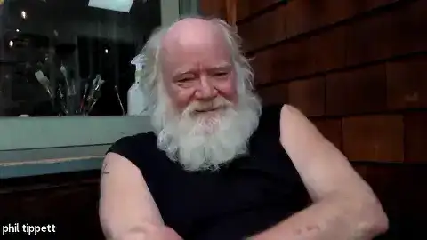
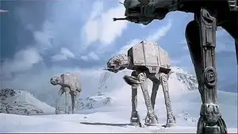

Vol.18 / VFX Legend Special
巨神と地獄の設計者：
フィル・ティペットの不滅の造形
2026.02.09 UP


[Phil Tippett's Mad God Archive]
◎ 作者経歴：特撮の黄金時代を築いた職人
フィル・ティペット（Phil Tippett）は、ILMのレジェンドであり、コマ撮り特有の「カクつき」を解消する「ゴー・モーション」の開発者です。CG全盛期にあっても「手作業の魂」をデジタルに注入し続け、2021年には30年の歳月をかけた執念作『マッドゴッド』を完成させました。
◎ 徹底解剖：マッドゴッド (MAD GOD)
マッドゴッド (2021)
30年の執念が生んだ狂気のストップモーション
1990年に構想を開始し、CG全盛の時代に逆行するように手作業で作り上げられた地獄巡りのような映像体験。クラウドファンディングやボランティアの支援を受け、ティペット自身の潜在意識をそのまま映像化したような、圧倒的な不気味さと美しさが共存する渾身のライフワークです。
◎ 徹底解剖：ホロチェス（デジャリック）の誕生
スター・ウォーズ エピソード4 / 新たなる希望 (1977)
週末の即興が生んだ銀河の娯楽
『スター・ウォーズ エピソード4』に登場するホロチェスは、ティペットが週末に廃材や粘土で即興制作したクリーチャーから始まりました。40年後の『フォースの覚醒』でも、当時の型を復元し、同じコマ撮り手法で撮影。最新デジタルとアナログの完璧なシンクロが実現しました。
◎ 徹底解剖：ジュラシック・パーク
ジュラシック・パーク (1993)
「絶滅」から始まったデジタルの命
当初はゴー・モーションで制作予定でしたが、CGの台頭に彼は「僕は絶滅だ」と語りました。しかし、彼は絶滅せず、パペットの動きをデジタル入力するデバイス**「DID」**を開発。CG恐竜に「生物としての重み」を教え込んだのは、彼の指先でした。
◎ 徹底解剖：スターシップ・トゥルーパーズ
スターシップ・トゥルーパーズ (1997)
物量と肉感のハイブリッド・ウォー
数千体の巨大虫（バグズ）が襲来する戦場。ティペット・スタジオはアナログ造形の知見を活かし、甲殻の質感や体液のヌメリを徹底的にシミュレート。一匹一匹が「触れそうなほどリアル」なのは、パペットとしての設計図が根底にあるからです。
◎ 代表作・技術まとめ
スター・ウォーズ エピソード5 / 帝国の逆襲 (AT-AT) (1980)
巨大歩行兵器の重厚な足音を「動きの溜め」だけで表現。ストップモーションが巨大感を出せることを証明した金字塔。
ロボコップ (ED-209) (1987)
あえて「ぎこちない動き」をさせ、機械の冷酷さと恐怖を演出。ストップモーションの不気味さを逆手に取った名演出。